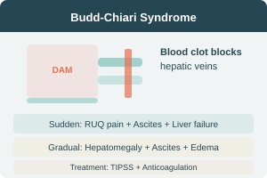

Budd-Chiari Syndrome
Thrombosis of the larger hepatic veins and sometimes the inferior vena cava.
Causes
- Myelofibrosis
- Primary proliferative polycythaemia
- Paroxysmal nocturnal hemoglobinuria
- AT-III, Protein C/S deficiency
- Pregnancy / OCP use
- Tumors (liver, kidney, adrenal)
- Congenital venous webs
- IVC stenosis
- ~50% idiopathic (falling with JAK2 mutation detection)
Clinical Features
Acute occlusion
- RUQ abdominal pain
- Marked ascites
- Acute liver failure (rare)
Gradual occlusion
- Gross ascites
- RUQ discomfort
- Hepatomegaly (tender)
- Peripheral edema (IVC obstruction)
- Cirrhosis & portal HTN (chronic)
Management
- Treat predisposing causes
- Thrombolysis (acute) — streptokinase → heparin → oral anticoagulation
- Ascites: medical management (limited success)
- Extensive occlusion: covered TIPSS + anticoagulation
Pathophysiology: Centrilobular congestion → centrilobular fibrosis → cirrhosis
